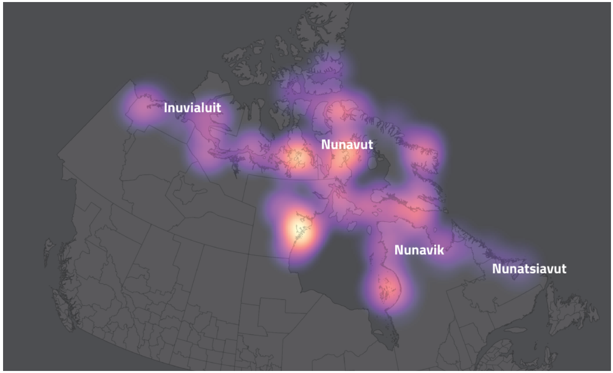
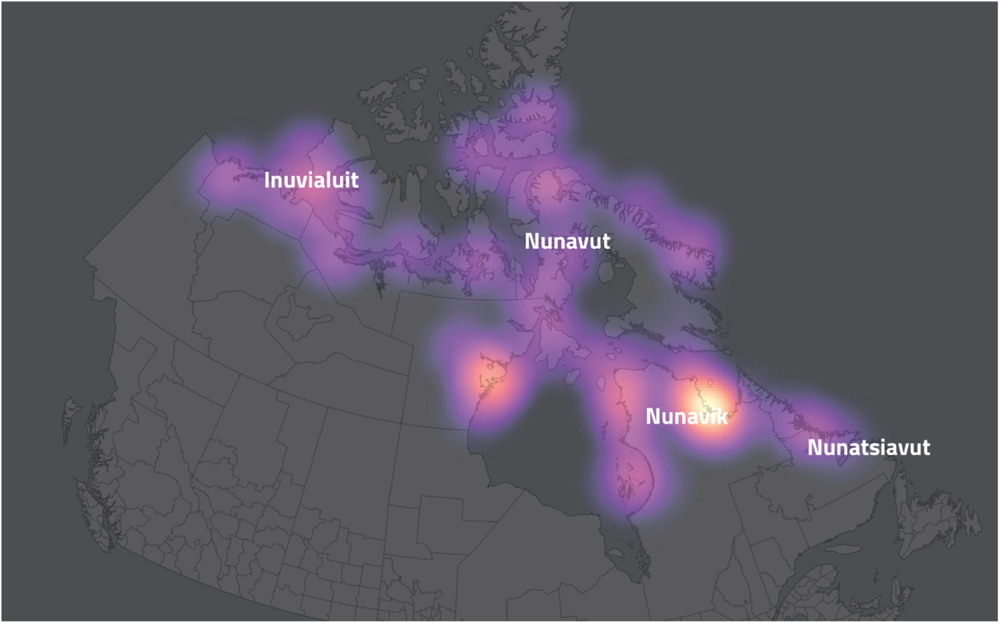
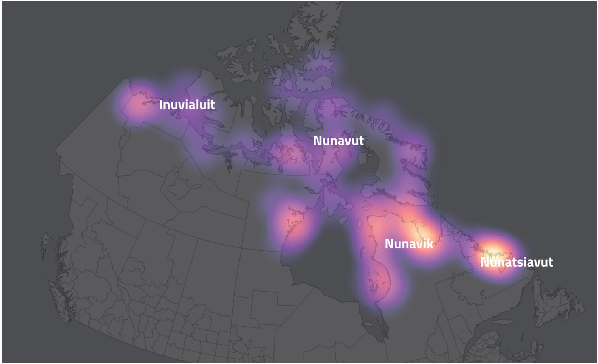
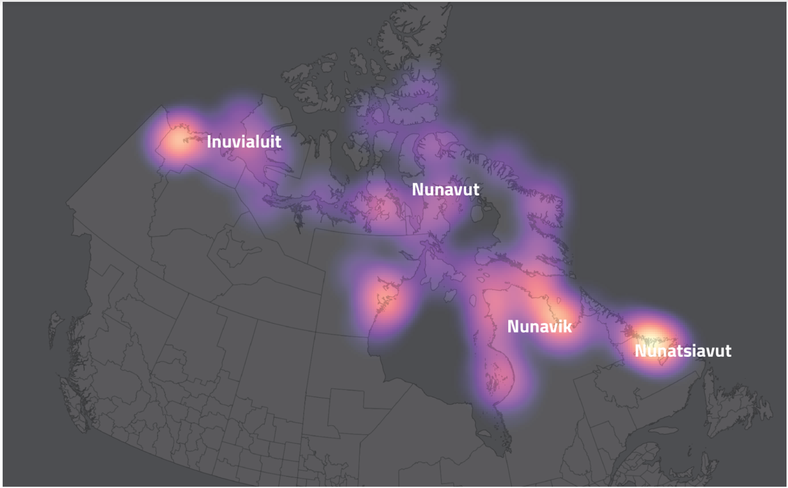

The Global Effects of Altered Solar Luminosity To Simulate Geoengineering Strategies
Ashley Cofrin and Tim Kaczanowski. Winter, 2019

As climate change becomes ever more prevalent, it is pressing to find solutions to mitigate and reverse anthropogenic actions. A proposed solution towards mitigation is through geoengineering techniques of injecting aerosols into the atmosphere in order to reflect sunlight. Our research investigates how a decrease in solar luminosity by 2.5% from modern levels would effect a scenario of doubling current CO2 levels, along with its side effects. This paper focuses specifically on impacts of surface air temperatures, sensible heat flux, and precipitation. In conjunction, these three things expose the significance on how decreased solar luminosity will affect a world where carbon footprints grow. We found that solar luminosity is able to cool a world with doubled CO2, although it is regional; and we found that precipitation in this simulation is minimally affected. It calls for more research to be done in the future as it is a solution ridden with unknown risks.
Introduction
Geoengineering is a strategy to alter the climate at a large scale to manipulate global warming (R. Soc. 2009.). It can be done through solar radiation management or capture and sequestration. This study will focus specifically on solar radiation management. A leading idea within geoengineering solutions is to mock the cooling effects of volcanoes by emitting sulfuric acid particles into the upper atmosphere that would deflect solar radiation; this lower solar radiation would lead to a cooler planet. This solution is not designed to be used as the primary solution to climate change, but rather to lessen the urgency, and give the population time to adapt to lower carbon footprint lifestyles and technologies. Scientists are currently studying how to adjust to a doubling of CO2 scenario. Within this is considerations such as: how much sulfuric acid should be emitted (Battioni et al. 2019), where should it be emitted (Rasch, Philip J., et al., 2008), how big the particle sizes should be (Stenchikov et al. 1998) for optimal results and minimal concern for dangerous side effects. There are also more recent and less studied suggestions to use injections of calcite or limestone particles rather than sulfuric acid; the former would protect the ozone layer, while the ladder would deplete the ozone layer (Keith et al, 2016).
Overall index (100%)

Based on our heat map, the southernmost regions have the greatest food security. This conclusion is logical: it is easier to build more grocery stores in regions closer to major cities, and grocery stores are one of the top contributors to food security. In turn, northern regions have a greater risk of food insecurity.
Stores (47.5%)
The presence of grocery stores is a significant factor in the food security of many regions, but especially northern regions. While the southern and central regions also score highly for other variables, many northern regions, especially northwestern and north central regions, derive a major part of their score from the presence of grocery stores.
Density (25%)
Opposite of many of our other variables, low population density is indicated by yellow. This is because areas with a low population density are regions of greater food security (less competition for resources) and must receive a greater weight to match other factors that contribute to high food security. Essentially, areas of higher population density are inherently at greater risk because more people suffer when resources are lacking.
Harvest (17.5%)
There is a stark association between harvest and latitude, backed up by both our heat map and correlation plot. Though harvest includes animals, plants, and fungi, there is an overall more equal number of hunters across regions. However, there is a stark contrast in numbers of gatherers; southern regions have many more gatherers. This may be due to the fact that plant life can be harvested for a greater portion of the year in these regions.
Security (10%)
Individual Perceived Food Security does not correlate strongly with any other variable, meaning that we cannot use it to isolate any variable as particularly associated with perceived security. Likely, the lack of correlation can be traced to the fact that this variable is self-reported. While less useful in our analysis, this factor may provide great interest to sociologists or psychologists.
Latitude (10%)
Our results and analysis show spatial trends of food security in Inuit Canada. They expose a latitudinal factor of southern regions experiencing higher food security than northern regions. This pattern emphasizes the help that is needed for Inuit communities in far northern Canada. The need for more food options is enhanced by the rapid pace of climate change. Climate change and human impact also impact native diets through contamination of fish, as humans can introduce dangerous chemicals, causing Inuit communities to ration fish consumption. The Arctic Co-ops, and Canada's food subsidy program (Government of Canada) have done some work toward achieving food security, but continued assistance is needed. Rather than ignoring these communities, the focus should be on helping them maintain food sovereignty.
Concluding Thoughts
Our findings are significant because they show that decreased solar luminosity is able to mitigate some of earth’s warming that is caused by carbon dioxide. If sulfuric acid were put into the atmosphere to reap albedo effects at a large enough quantity, it would be effective in regards to reducing solar luminosity. Our simulations show that this decrease in solar luminosity in conjunction with doubled CO2 keeps surface air cooler than without the decreased solar luminosity, due partially to higher amounts of negative heat flux, translating to a cooler climate.
It is important to note the regionality of the results. Although the decrease in solar luminosity is globally distributed (which is different than the actual implementation of aerosol injections), different regions of the globe are affected differently. Starting with surface air temperature: figure 10 shows that in the situation that geoengineering were implemented, and CO2 were doubles, the tropics would still experience warming, in contrast to the poles. This would result in humans, animals, and plants all still having to adapt to a warming climate. This is significant given that historically the global north has been more privileged than the global south. This means that the global south would likely not have the same resources to adapt to the warmer climate. This may not be true in the realistic injections of aerosols given that the injections would most likely take place in the tropics, but it remains significant to consider. In regard to sensible heat flux: figure 15 (a doubles CO2 and 2.5% luminosity decrease scenario) show spots of more absorbed heat in Africa, North America, and northern Asia. This trend balances out the surface air temperature trend, but poses new challenges as these are spots that contain permafrost, high amounts of agriculture, and once again (although less) vulnerable populations. In regards to precipitation, the alterations are so low in our simulations that there is no significance in regionality. There has been talk among the scientific community about precipitation changes as discussed in the introduction, but EdGCM’s do not support those arguments. EdGCM however is a relatively simplistic model.
Of the many potentially negative side effects to this solution as discussed in the introduction, our results were only able to capture precipitation changes, in which showed minimal changes. These changes may be more significant with actual aerosols due to regionality rather than equally dispersed global effects. Our tests do not encompass regionality. Regionality would be significant in the actual execution because the aerosols would be injected at the tropics, and wind patterns would disperse the aerosols. This may lead to unequal dispersal of ocean acidity and precipitation acidity. There are also models being run to understand how regional climates would be affected if they were dispersed from the tropics such as strength of monoonal seasons, or the hypothesized reduced precipitation, soil moisture, and river flow (Trenberth 2007). Our simulations also do not account for the ozone depletion in result from adding acid to the atmosphere, which in turn would increase ultraviolet rays coming to earth. Our study also does not show the effects of injections were to halt, and rapid warming were to occur, along with the other effects of this rapid warming (Wigley 2007).